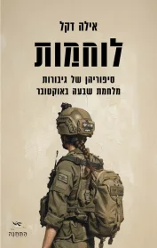
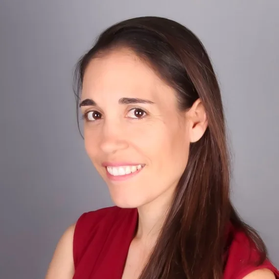
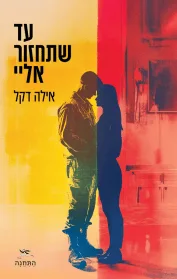
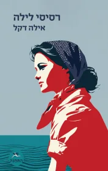
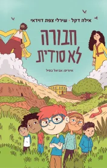
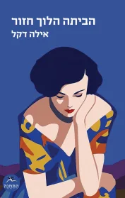

לוחמות
עשרים קולות של נשים שלקחו חלק בלחימה. אומץ, אחריות והסיפורים שצריכים להישמע.
עוד על הספר
מונולוגים של לוחמות בצה״ל במלחמת חרבות ברזל, המעניקים מקום לחוויותיהן האישיות.
לוחמות בחנות עבריתעל נשים שמוצאות את קולן, על בית ושייכות, ועל החיים שבין מה שקיבלנו בירושה למה שאנחנו בוחרים להיות.

חמישה ספרים, קולות שונים, וחוט אחד שמחבר ביניהם: הרצון לראות את האנשים שמאחורי הסיפור.

עשרים קולות של נשים שלקחו חלק בלחימה. אומץ, אחריות והסיפורים שצריכים להישמע.
מונולוגים של לוחמות בצה״ל במלחמת חרבות ברזל, המעניקים מקום לחוויותיהן האישיות.
לוחמות בחנות עברית
אהבה, משפחה וגעגוע בצל המילואים. סיפור על מי שיוצאים, ועל מי שנשארים בבית.
יצירה על זוג המנסה לשמור על חיי המשפחה בתקופת המלחמה, המבוססת על אירועים מחייה של אילה.
עד שתחזור אליי בחנות עברית
יומנה של חיותה בוסל פוגש אישה צעירה בת זמננו. שתי תקופות, ושאלות על זהות נשית.
רומן השוזר את סיפורה ההיסטורי של החלוצה חיותה בוסל עם דמות בדיונית במאה ה־21.
רסיסי לילה בחנות עברית
הרפתקה עכשווית שפוגשת אגדות תלמודיות. עם שירלי צפת דוידאי.
העולם התלמודי ועולמם של ילדים היום נפגשים בספר הרפתקאות על חברות ומציאת מקום בחבורה.
חבורה לא סודית בחנות עברית
מסע בעקבות סוד משפחתי, הקהילה היהודית במצרים והדרך הארוכה למצוא בית.
ספר הביכורים של אילה עוסק במפגש בין זהות דתית וחילונית ובסיפורן של נשים בקהילה היהודית במצרים.
הביתה הלוך חזור בחנות עבריתסופרת, מרצה ואשת רוח ישראלית.
הכתיבה של אילה דקל מפגישה בין סיפורים אישיים לשאלות הגדולות של החברה הישראלית.
אילה גדלה בבית חורון במשפחה דתית, למדה יהדות ושירתה כמפקדת וקצינה בחוות השומר. הדרך שלה הובילה לשליחות חינוכית בטורונטו, להוראת תנ״ך בבית הסוהר איילון ולמפגש מתמשך עם אנשים, טקסטים ועולמות שונים.
בשנת 2013 הצטרפה לישיבה החילונית של בינ״ה, ובהמשך עמדה בראשה עד תחילת 2026. היא מרצה ומנחה בנושאי תרבות יהודית ישראלית, תלמוד, מגדר ודמויות נשיות, ובוגרת בית המדרש לרבנות ישראלית של מכון הרטמן והמדרשה באורנים.
מאז ספרה הראשון ב־2021, היא כותבת על בית, משפחה, זהות וקולות נשיים. אילה מתגוררת במודיעין עם בן זוגה ושלושת ילדיהם.
הסיפורים ממשיכים גם מחוץ לדף — בשיחה, בלימוד ובמבט משותף על העולם שבו אנחנו חיים.
שיחה על העולמות שבספרים: בית ומשפחה, עבר והווה, והמפגש בין החיים האישיים לסיפור הישראלי.
לבירור מפגש ספרותידמויות נשיות, שאלות של מגדר והסיפורים שנשארו בשולי ההיסטוריה — מהתלמוד ועד ימינו.
לבירור הרצאהלימוד ושיחה על תרבות יהודית ישראלית, המפגש בין דתיים לחילוניים והחיבורים שבין אנשים לטקסטים.
לבירור מפגש לימודמאמרים, שיחות וסיפורים — עוד דרכים לפגוש את עולמה של אילה.
נשים, תרבות וספרות במאמרים של אילה בבלוג הספרייה הלאומית.
למאמרים בספרייה הלאומיתכתבות, שיחות ותכנים המחברים בין מחשבה יהודית לחיים כאן ועכשיו.
לתכנים במכון הרטמןטקסטים על תרבות, משפחה ויהדות ישראלית מתוך הכתיבה של אילה בבינ״ה.
למאמרים בבינ״הלכל ספר בקטלוג יש קישור לעמוד שלו בחנות עברית, שם אפשר לבדוק פורמטים, זמינות ואפשרויות רכישה. הרכישה מתבצעת בחנות החיצונית.
״חבורה לא סודית״, שנכתב עם שירלי צפת דוידאי, הוא ספר הרפתקאות לילדים ולנוער המשלב סיפורים תלמודיים עם העולם העכשווי.
אפשר לפנות דרך עמוד הפייסבוק של אילה, המקושר באזור יצירת הקשר, ולברר על התאמה לקהל, תוכן המפגש וזמינות.
באזור ״בין המילים״ תמצאו קישורים למאמרים ותכנים בספרייה הלאומית, במכון הרטמן ובבינ״ה.
לבירור על מפגש, לשאלה על הספרים או פשוט כדי להישאר קרובים למילים — אפשר לפנות לאילה בפייסבוק.